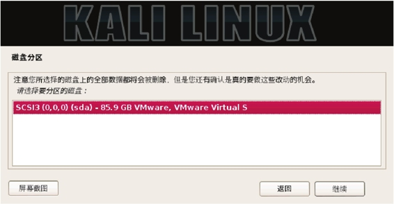
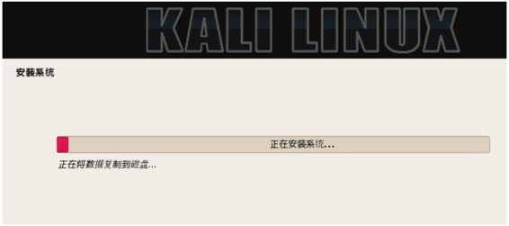

1.4 安装Kali Linux
如今Linux的安装过程已经非常“傻瓜”化，只需要轻点几下鼠标，就能够完成整个系统的安装。Kali Linux操作系统的安装也非常简单。本节将分别介绍安装Kali Linux至硬盘、USB驱动器、树莓派、VMware Workstation和Womuare Tods的详细过程。
1.4.1 安装至硬盘
安装到硬盘是最基本的操作之一。该工作的实现可以让用户不使用DVD，而正常的运行Kali Linux。在安装这个全新的操作系统之前，需要做一些准备工作。例如，从哪里得到Linux？对电脑配置有什么要求？……下面将逐一列出这些要求。
- Kali Linux安装的磁盘空间的最小值是8GB。为了便于使用，这里推荐至少25GB去保存附加程序和文件。
- 内存最好为512MB以上。
- Kali Linux的下载地址http://www.kali.org/downloads/，下载界面如图1.1所示。
图1.1 下载Kali Linux界面
该官方网站提供了32位和64位ISO文件。本书中以32位为例来讲解安装和使用。下载完ISO文件后，将该映像文件刻录到一张DVD光盘上。接下来就可以着手将KaliLinux安装至硬盘中了。
（1）将安装光盘DVD插入到用户计算机的光驱中，重新启动系统，将看到如图1.2所示的界面。
图1.2 启动界面
（2）该界面是Kali的引导界面，在该界面选择安装方式。这里选择Graphical Install（图形界面安装），将显示如图1.3所示的界面。
图1.3 选择语言
（3）在该界面选择安装系统的默认语言为Chinese（Simplified），然后单击Continue按钮，将显示如图1.4所示的界面。
图1.4 选择您的区域
（4）在该界面选择区域为“中国”，然后单击“继续”按钮，将显示如图1.5所示的界面。
图1.5 配置键盘
（5）在该界面选择键盘模式为“汉语”，然后单击“继续”按钮，将显示如图1.6所示的界面。
图1.6 配置网络
（6）该界面用来设置系统的主机名，这里使用默认的主机名Kali（用户也可以输入自己系统的名字）。然后单击“继续”按钮，将显示如图1.7所示的界面。
图1.7 配置网络
（7）该界面用来设置计算机所使用的域名，本例中输入的域名为kali.secureworks.com。如果当前计算机没有连接到网络的话，可以不用填写域名，直接单击“继续”按钮，将显示如图1.8所示的界面。
图1.8 设置用户和密码
（8）在该界面设置root用户密码，然后单击“继续”按钮，将显示如图1.9所示的界面。
图1.9 磁盘分区
（9）该界面供用户选择分区。这里选择“使用整个磁盘”，然后单击“继续”按钮，将显示如图1.10所示的界面。

图1.10 磁盘分区
（10）该界面用来选择要分区的磁盘。该系统中只有一块磁盘，所以这里使用默认磁盘就可以了。然后单击“继续”按钮，将显示如图1.11所示的界面。
图1.11 已选择要分区
（11）该界面要求选择分区方案，默认提供了三种方案。这里选择“将所有文件放在同一个分区中（推荐新手使用）”，然后单击“继续”按钮，将显示如图1.12所示的界面。
图1.12 磁盘分区
（12）在该界选择“分区设定结束并将修改写入磁盘”，然后单击“继续”按钮，将显示如图1.13所示的界面。如果想要修改分区，可以在该界面选择“撤消对分区设置的修改”，重新分区。
图1.13 磁盘分区
（13）在该界面选择“是”复选框，然后单击“继续”按钮，将显示如图1.14所示的界面。

图1.14 安装系统
（14）现在就开始安装系统了。在安装过程中需要设置一些信息，如设置网络镜像，如图1.15所示。如果安装Kali Linux系统的计算机没有连接到网络的话，在该界面选择“否”复选框，然后单击“继续”按钮。这里选择“是”复选框，将显示如图1.16所示的界面。
图1.15 配置软件包管理器
图1.16 设置HTTP代理
（15）在该界面设置HTTP代理的信息。如果不需要通过HTTP代理来连接到外部网络的话，直接单击“继续”按钮，将显示如图1.17所示的界面。
图1.17 扫描镜像站点
（16）扫描镜像站点完成后，将显示如图1.18所示的界面。
图1.18 镜像所在的国家
（17）在该界面选择镜像所在的国家，这里选择“中国”，然后单击“继续”按钮，将显示如图1.19所示的界面。
图1.19 选择镜像
（18）该界面默认提供了7个镜像站点，这里选择一个作为本系统的镜像站点。这里选择mirrors.163.com，然后单击“继续”按钮，将显示如图1.20所示的界面。
图1.20 将GRUB启动引导器安装到主引导记录（MBR）上吗
（19）在该界面选择“是”复选框，然后单击“继续”按钮，将显示如图1.21所示的界面。
图1.21 将GRUB安装至硬盘
（20）此时将继续进行安装，结束安装进程后，将显示如图1.22所示的界面。
图1.22 结束安装进程
（21）在该界面单击“继续”按钮，将返回到安装系统过程。安装完成后，将会自动重新启动系统。
1.4.2 安装至USB驱动器
Kali Linux USB驱动器提供了一种能力，它能永久的保存系统设置、永久更新及在USB设备上安装软件包，并且允许用户运行自己个性化的Kali Linux。在Win32磁盘成像仪上创建Linux发行版的一个可引导Live USB驱动器，它包括Kali Linux的持续存储。本小节将介绍安装Kali Linux至USB驱动器的操作步骤。
安装一个操作系统到USB驱动器上和安装至硬盘有点不同。所以，在安装之前需要做一些准备工作。例如，从哪得到Linux？USB驱动器的格式？USB驱动器的大小？……下面将逐一列出这些要求。
- 一个FAT32格式的USB驱动器，并且最小有8GB的空间。
- 一个Kali Linux ISO映像。
- Win32磁盘成像仪（映像写入U盘）。
- 下载Kali Linux从http://www.kali.org/downloads/。
前面的准备工作完成之后，就可以来安装系统了。安装Kali Linux到一个USB驱动器上的操作步骤如下所示。
（1）插入到Windows系统一个被格式化并且可写入的USB驱动器。插入后，显示界面如图1.23所示。
图1.23 可移动设备
（2）启动Win32 Disk Imager，启动界面如图1.24所示。在Image File位置，单击图标选择Kali Linux DVD ISO映像所在的位置，选择将要安装Kali Linux的USB设备，本例中的设备为K。选择ISO映像文件和USB设备后，单击Write按钮，将ISO文件写入到USB驱动器上。
图1.24 Win32 Disk Imager初始界面
（3）使用UNetbootin工具将设备K做成一个USB启动盘。启动UNetbootin工具，将显示如图1.25所示的界面。
图1.25 选择光盘镜像
（4）在该界面选择“光盘镜像”复选框，然后选择ISO文件所在的位置，并将Space used to preserve files across reboots设置为4096MB。
（5）选择USB驱动器，本例中的USB驱动器为K，然后单击“确定”按钮，将开始创建可引导的USB驱动器。
（6）创建完成后，将显示如图1.26所示的界面。
图1.26 UNetbootin安装完成
（7）此时，USB驱动器就创建成功了。在该界面单击“现在重启”按钮，进入BIOS启动菜单里选择USB启动，就可以安装Kali Linux操作系统了。
1.4.3 安装至树莓派
树莓派（英文名为“Raspberry Pi”，简写为RPi）是一款基于ARM的微型电脑主板，以SD卡为内存硬盘。为了方便携带，在树莓派上安装Kali Linux是一个不错的选择。本小节将介绍在树莓派上安装Kali Linux操作系统。
（2）下载的映像文件是一个压缩包，需要使用7-Zip压缩软件解压。解压后其名称为kali-linux-1.0.6a-rpi.img。
（3）使用Win32 Disk Imager工具，将解压后的映像文件写入到树莓派的SD卡中。启动Win32 Disk Imager工具，将显示如图1.27所示的界面。
图1.27 Win32 Disk Imager启动界面
（4）在该界面单击图标，选择kali-linux-1.0.6a-rpi.img，将显示如图1.28所示的界面。
图1.28 添加映像文件
（5）此时在该界面单击Write按钮，将显示如图1.29所示的界面。
图1.29 确认写入数据的磁盘
（6）该界面提示是否确定要将输入写入到G设备吗？这里选择Yes，将显示如图1.30所示的界面。
图1.30 开始写入数据
（7）从该界面可以看到正在写入数据。写入完成后，将显示如图1.31所示的界面。
图1.31 完成写入数据
（8）从该界面可以看到写入数据成功。此时单击OK按钮，将返回到图1.28所示的界面。然后单击Exit按钮，关闭Win32 Disk Imager工具。
（9）此时从Windows系统中弹出SD卡，并且将其插入到树莓派中。然后连接到显示器，插上网线、鼠标、键盘和电源，几秒后将启动Kali Linux操作系统。使用Kali默认的用户名和密码登录，其默认用户名和密码为root和toor。
如果用户觉得使用树莓派上的Kali来回插一些设备比较麻烦时，这里可以使用PuTTY攻击远程登录到Kali的命令行。由于在Linux中SSH服务默认是启动的，所以用户可以在PuTTY中使用SSH服务的22端口远程连接到Kali Linux。PuTTY不仅仅只能远程连接到树莓派上的Kali操作系统，它可以连接到安装在任何设备上的Kali操作系统。下面将介绍使用PuTTY工具，远程连接到Kali Linux操作系统。
（1）下载PuTTY的Windows版本。
（2）启动PuTTY工具，将显示如图1.32所示的界面。
图1.32 PuTTY工具
（3）在该界面，Host Name（or IP address）对应的文本框中输入Kali系统的IP地址，并且Connection type选择SSH。然后单击Open按钮，将显示如图1.33所示的界面。如果不知道Kali系统IP的话，执行ifconfig命令查看。
图1.33 警告信息
（4）该界面显示了一个警告信息，这是为了安全确认是否要连接到该服务器。该对话框只有在第一次连接某台主机时才会弹出。这里单击“是”按钮，将显示如图1.34所示的界面。
图1.34 登录到Kali系统
（5）在该界面输入Kali系统默认的用户命和密码登录到系统。现在就可以在该系统下，运行任何的命令了。
如果用户不喜欢在命令行下操作的话，也可以远程连接到Kali Linux的图形界面。下面将介绍通过安装Xming软件，实现在PuTTY下连接到Kali操作系统的图形界面。
（1）从http://sourceforge.net/projects/xming/网站下载Xming软件。
（2）启动下载的Xming软件，将显示如图1.35所示的界面。
图1.35 欢迎界面
（3）该界面显示了Xming的欢迎信息。此时单击Next按钮，将显示如图1.36所示的界面。
图1.36 选择安装位置
（4）在该界面选择Xming的安装位置。这里使用默认的位置，单击Next按钮，将显示如图1.37所示的界面。
图1.37 选择组件
（5）在该界面选择安装的组件。这里选择Don’t install an SSH client组件，然后单击Next按钮，将显示如图1.38所示的界面。

图1.38 选择启动菜单文件夹
（6）在该界面选择启动菜单文件夹。这里默认是Xming，如果想使用不同的文件夹，单击Browse按钮选择新的文件夹。如果使用默认的，则单击Next按钮，将显示如图1.39所示的界面。
图1.39 选择额外的任务
（7）在该界面选择Xming创建的快捷方式。这里选择Create a desktop icon for Xming（在桌面上创建快捷方式）复选框，然后单击Next按钮，将显示如图1.40所示的界面。
图1.40 准备安装Xming
（8）通过前面的步骤将Xming进行了配置。现在准备安装，单击Install按钮，将显示如图1.41所示的界面。
图1.41 安装完成
（9）从该界面可以看到Xming软件安装完成。此时单击Finish按钮退出设置，并且Xming将会运行。如果不想要Xming启动的话，将Launch Xming前面复选框的对勾去掉。
（10）现在打开PuTTY工具，并且输入Kali系统的IP地址，如图1.32所示。然后在PuTTY左侧栏Category下依次选择Connection|SSH|X11命令，将显示如图1.42所示的界面。
图1.42 配置PuTTY
（11）在该界面选择Enable X11 forwarding复选框，并且在X display location对应的文本框中输入localhost:0。然后单击Open按钮，启动PuTTY会话（一定要确定Xming在后台运行）。然后输出Kali系统的用户名和密码，成功连接到Kali操作系统，如图1.43所示。
图1.43 远程连接成功
（12）从该界面可以看到成功连接到了Kali操作系统。现在就可以远程连接到Kali的图形界面了，执行命令如下所示：
root@kali:~# xfce4-session
执行以上命令后，将远程登录到Kali系统的桌面。
注意：在PuTTY下，startx命令不能运行。
1.4.4 安装至VMware Workstation
VMware Workstation是一款功能强大的桌面虚拟计算机软件。它允许用户在单一的桌面上同时运行不同的操作系统。用户在其中可以进行开发、测试和部署新的应用程序。目前最新版本是10.0.1，官方下载地址https://my.vmware.com/cn/web/vmware/downloads。本小节将介绍在VMware Workstation上安装Kali Linux操作系统。
（1）启动VMware Workstation，将显示如图1.44所示的界面。
图1.44 VMware Workstation 10
（2）在该界面单击“创建新的虚拟机”图标，将显示如图1.45所示的界面。
图1.45 新建虚拟机向导
（3）该界面选择安装虚拟机的类型，包括“典型”和“自定义”两种。这里推荐使用“典型”的方式，然后单击“下一步”按钮，将显示如图1.46所示的界面。
图1.46 安装客户机操作系统
（4）该界面用来选择如何安装客户机操作系统。这里选择“稍后安装操作系统”，然后单击“下一步”按钮，将显示如图1.47所示的界面。
图1.47 选择客户机操作系统
（5）在该界面选择要安装的操作系统和版本。这里选择Linux操作系统，版本为其他Linux 2.6.X内核，然后单击“下一步”按钮，将显示如图1.48所示的界面。
图1.48 命名虚拟机
（6）在该界面为虚拟机创建一个名称，并设置虚拟机的安装位置。设置完成后，单击“下一步”按钮，将显示如图1.49所示的界面。
图1.49 指定磁盘容量
（7）在该界面设置磁盘的容量。如果有足够大的磁盘时，建议设置的磁盘容量大点，避免造成磁盘容量不足。这里设置为50GB，然后单击“下一步”按钮，将显示如图1.50所示的界面。
图1.50 已准备好创建虚拟机
（8）该界面显示了所创建虚拟机的详细信息，此时就可以创建操作系统了。然后单击“完成”按钮，将显示如图1.51所示的界面。
图1.51 创建虚拟机
（9）该界面显示了新创建的虚拟机的详细信息。现在准备安装Kali Linux。在安装Kali Linux之前需要设置一些信息，在VMware Workstation窗口中单击“编辑虚拟机设置”，将显示如图1.52所示的界面。
图1.52 虚拟机设置
（10）在该界面选择“CD/DVD（IDE）”选项，接着在右侧选择“使用ISO映像文件”复选框，单击“浏览”按钮，选择Kali Linux的映像文件。然后单击“确定”按钮，将返回到图1.51所示的界面。
（11）在图1.51界面，选择“开启此虚拟机”命令，将显示一个新的窗口，如图1.53所示。
图1.53 安装界面
（12）接下来的安装过程和在第1.4.1小节中介绍的过程一样了，这里就不再赘述。
1.4.5 安装VMware Tools
VMware Tools是VMware虚拟机中自带的一种增强工具。它是VMware提供的增强虚拟显卡和硬盘性能，以及同步虚拟机与主机时钟的驱动程序。只有在VMware虚拟机中安装好VMware Tools工具后，才能实现主机与虚拟机之间的文件共享，同时可支持自由拖曳的功能，鼠标也可在虚拟机与主机之间自由移动（不用再按Ctrl+Alt组合键）。本小节将介绍VMware Tools程序的安装。
（1）在VMware Workstation菜单栏中，依次选择“虚拟机”|“安装VMware Tools…”命令，如图1.54所示。
图1.54 安装VMware Tools
（2）挂载VMware Tools安装程序到/mnt/cdrom/目录。执行命令如下所示：
root@kali:~# mkdir /mnt/cdrom/ #创建挂载点
root@kali:~# mount /dev/cdrom /mnt/cdrom/ #挂载安装程序
mount: block device /dev/sr0 is write-protected, mounting read-only
看到以上的输出信息，表示VMware Tools安装程序挂载成功了。
（3）切换到挂载位置，解压安装程序VMwareTools。执行命令如下所示：
root@kali:~# cd /mnt/cdrom/ #切换目录
root@kali:/mnt/cdrom# ls 查看当前目录下的文件
manifest.txt VMwareTools-9.6.1-1378637.tar.gz vmware-tools-upgrader-64
run_upgrader.sh vmware-tools-upgrader-32
root@kali:/mnt/cdrom# tar zxvf VMwareTools-9.6.1-1378637.tar.gz -C / #解压VMwareTools安装程序
执行以上命令后，VMware Tools程序将被解压到/目录中，并生成一个名为vmware-tools-distrib文件夹。
（4）切换到VMware Tools的目录，并运行安装程序。执行命令如下所示：
root@kali:/mnt/cdrom# cd /vmware-tools-distrib/ #切换目录
root@kali:/vmware-tools-distrib# ./vmware-install.pl #运行安装程序
执行以上命令后，会出现一些问题。这时按下“回车”键，接受默认值。
（5）重新启动计算机。